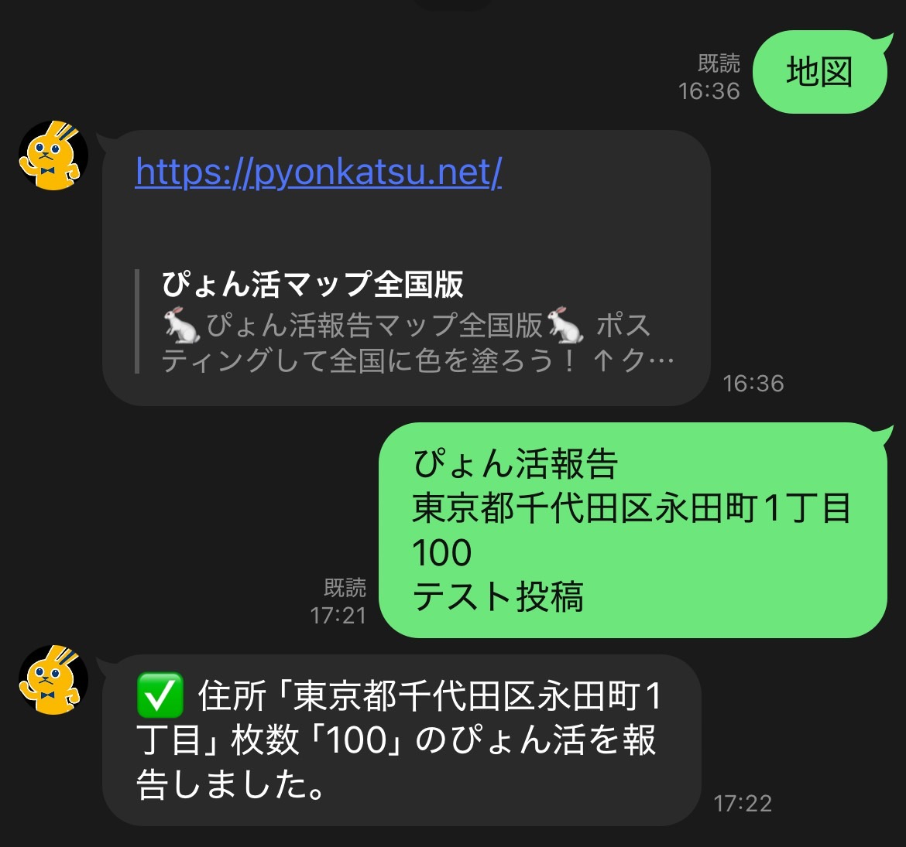

ぴょん活報告用LINEアカウントとの会話はこんな感じです。

住所は全国版に対応しています。地図画面から
都道府県 → 市区町村 → 町名
と辿ると、自分が報告した場所に色がついているのを確認できます。
一定枚数を超えると地図上にアイコンが表示されます。活動の目安としてご活用ください。
隣町にも？もしかしたら自分の住んでいる町にもぴょん活ラーがいるかも？！
楽しんでぴょん活するために、ぜひこの地図や機能をお役立てください🐰
このマップはコミュニティ版として公開しています。
チラシの複数種類などには対応しておらず、
単純に枚数のみで集計されています。
※既に提供済みの陣営向けとは別ものです。